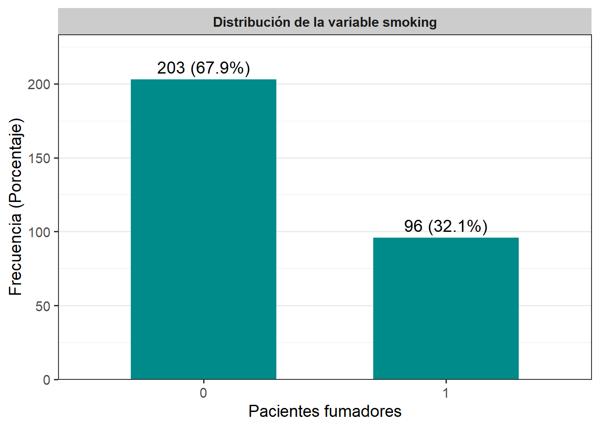
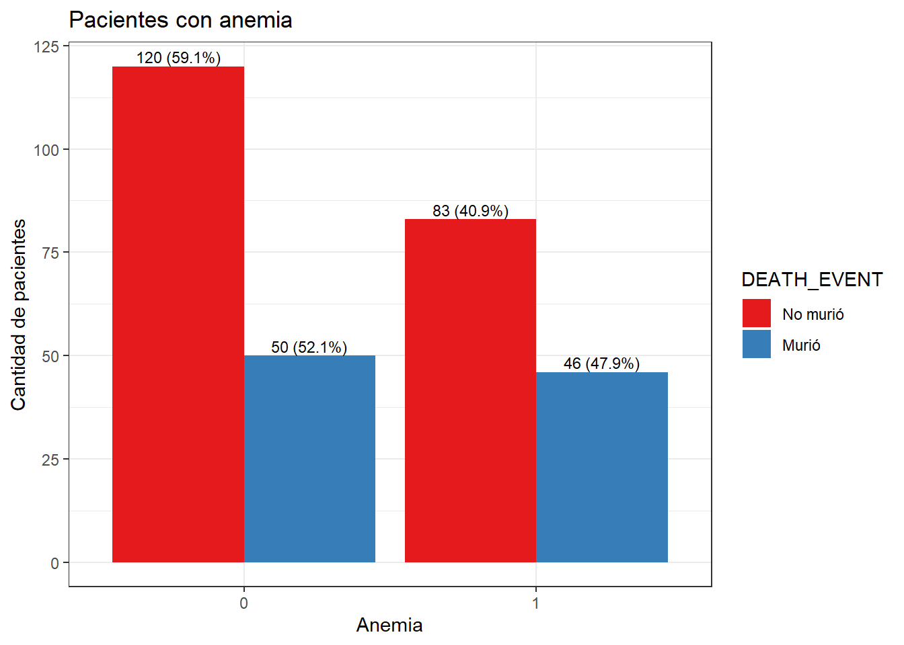
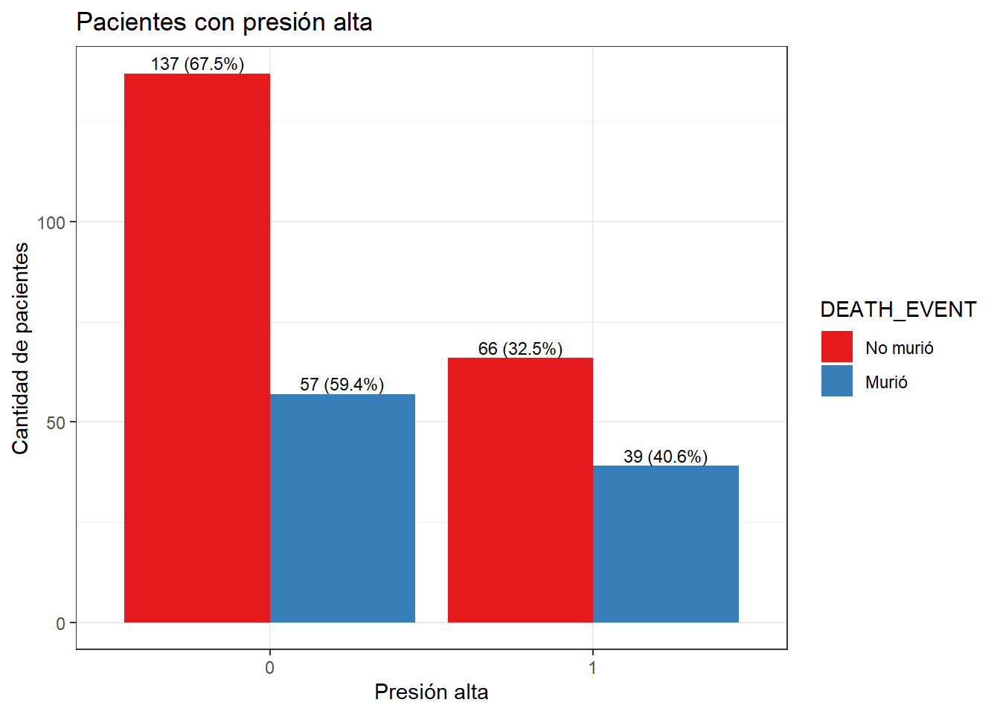
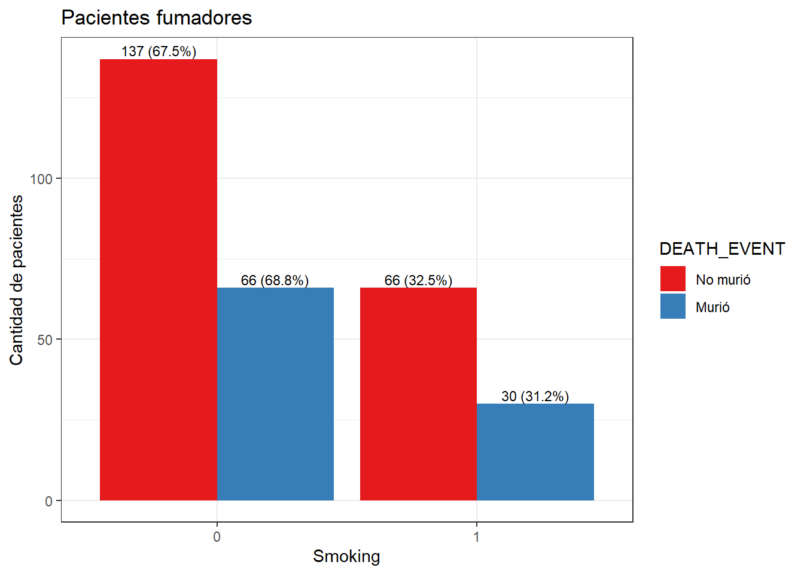

Capítulo 3 Análisis exploratorio de datos (EDA)
3.1 Contexto de los datos
Aquí se presenta una explicación de las variables pertenecientes al conjunto de datos:
age (años): Edad del paciente.
anaemia (Binario): Disminución de glóbulos rojos o hemoglobina.
creatinine_phosphokinase (µg/L): Nivel de la enzima CPK en la sangre.
diabetes (Binario): Alteración del uso de la glucosa en la sangre.
ejection_fraction (porcentaje): Porcentaje de sangre bombeada.
high_blood_pressure (Binario): Presión arterial elevada de forma persistente.
platelets (k/mL): Plaquetas en sangre.
serum_creatinine (mg/dL): Nivel de creatinina en sangre.
serum_sodium (mEq/L): Nivel de sodio en sangre.
sex (Binario): Mujer u hombre.
smoking (Binario): Pacientes fumadores.
time (días): Periodo de seguimiento.
DEATH_EVENT (Binario): Pacientes muertos o vivos (
Target).
El conjunto de datos clínicos cuenta con variables numéricas y categóricas, de las cuales algunas son binarias con 0 = False-Mujer y 1 = True-Hombre.
3.2 Extracción, transformación y carga (ETL)
- Cargamos el conjunto de datos:
## Rows: 299 Columns: 13
## ── Column specification ────────────────────────────────────────────────────────
## Delimiter: ","
## dbl (13): age, anaemia, creatinine_phosphokinase, diabetes, ejection_fractio...
##
## ℹ Use `spec()` to retrieve the full column specification for this data.
## ℹ Specify the column types or set `show_col_types = FALSE` to quiet this message.- Verificamos el encabezado de los datos, sus dimensiones, nombres de columnas y estructura del dataset:
## # A tibble: 5 × 13
## age anaemia creatinine_phosphokinase diabetes ejection_fraction
## <dbl> <dbl> <dbl> <dbl> <dbl>
## 1 75 0 582 0 20
## 2 55 0 7861 0 38
## 3 65 0 146 0 20
## 4 50 1 111 0 20
## 5 65 1 160 1 20
## # ℹ 8 more variables: high_blood_pressure <dbl>, platelets <dbl>,
## # serum_creatinine <dbl>, serum_sodium <dbl>, sex <dbl>, smoking <dbl>,
## # time <dbl>, DEATH_EVENT <dbl>## [1] 299 13## [1] "age" "anaemia"
## [3] "creatinine_phosphokinase" "diabetes"
## [5] "ejection_fraction" "high_blood_pressure"
## [7] "platelets" "serum_creatinine"
## [9] "serum_sodium" "sex"
## [11] "smoking" "time"
## [13] "DEATH_EVENT"## spc_tbl_ [299 × 13] (S3: spec_tbl_df/tbl_df/tbl/data.frame)
## $ age : num [1:299] 75 55 65 50 65 90 75 60 65 80 ...
## $ anaemia : num [1:299] 0 0 0 1 1 1 1 1 0 1 ...
## $ creatinine_phosphokinase: num [1:299] 582 7861 146 111 160 ...
## $ diabetes : num [1:299] 0 0 0 0 1 0 0 1 0 0 ...
## $ ejection_fraction : num [1:299] 20 38 20 20 20 40 15 60 65 35 ...
## $ high_blood_pressure : num [1:299] 1 0 0 0 0 1 0 0 0 1 ...
## $ platelets : num [1:299] 265000 263358 162000 210000 327000 ...
## $ serum_creatinine : num [1:299] 1.9 1.1 1.3 1.9 2.7 2.1 1.2 1.1 1.5 9.4 ...
## $ serum_sodium : num [1:299] 130 136 129 137 116 132 137 131 138 133 ...
## $ sex : num [1:299] 1 1 1 1 0 1 1 1 0 1 ...
## $ smoking : num [1:299] 0 0 1 0 0 1 0 1 0 1 ...
## $ time : num [1:299] 4 6 7 7 8 8 10 10 10 10 ...
## $ DEATH_EVENT : num [1:299] 1 1 1 1 1 1 1 1 1 1 ...
## - attr(*, "spec")=
## .. cols(
## .. age = col_double(),
## .. anaemia = col_double(),
## .. creatinine_phosphokinase = col_double(),
## .. diabetes = col_double(),
## .. ejection_fraction = col_double(),
## .. high_blood_pressure = col_double(),
## .. platelets = col_double(),
## .. serum_creatinine = col_double(),
## .. serum_sodium = col_double(),
## .. sex = col_double(),
## .. smoking = col_double(),
## .. time = col_double(),
## .. DEATH_EVENT = col_double()
## .. )
## - attr(*, "problems")=<externalptr>Algunas variables aparecen en el dataset como numéricas, pero el contexto sugiere un manejo categórico al ser variables binarias con 0 = False-Mujer y 1 = True-Hombre, por lo que se debe realizar el cambio de double a factor.
datos$anaemia <- as.factor(datos$anaemia)
datos$diabetes <- as.factor(datos$diabetes)
datos$high_blood_pressure <- as.factor(datos$high_blood_pressure)
datos$sex <- as.factor(datos$sex)
datos$smoking <- as.factor(datos$smoking)
datos$DEATH_EVENT <- as.factor(datos$DEATH_EVENT)- Identificamos los valores
NA:

Como se observa en el gráfico no se presentan datos faltantes en el dataset.
3.3 Ánálisis de la variable objetivo: DEATH_EVENT
- Resumen de la variable:
## # A tibble: 2 × 3
## DEATH_EVENT n proporcion
## <fct> <int> <dbl>
## 1 0 203 0.679
## 2 1 96 0.321La variable DEATH_EVENT representa la mortalidad de los pacientes, indicando si el paciente murió (1) o no (0). De un total de 299 observaciones, el 67,89% de los pacientes sobrevivieron (\(n = 203\)), mientras que el 32,1% murieron (\(n = 96\)). Esta distribución de los datos está moderadamente desbalanceada, lo que sugiere que hay más casos de no fallecimiento que de fallecimiento, pero no es un desequilibrio extremo. Sin embargo, a nivel clínico la proporción del 32% de defunciones es alta en comparación con la población general, lo que podría deberse a que los datos provienen de una población de alto riesgo.
- Diagrama de barras
tabla_DEATH_EVENT <- datos %>%
count(DEATH_EVENT, name = "Pacientes") %>%
mutate(
Porcentaje = round(Pacientes / sum(Pacientes) * 100, 1),
Etiqueta = paste0(Pacientes, " (", Porcentaje, "%)"))
tabla_DEATH_EVENT %>%
ggplot(aes(x = factor(DEATH_EVENT), y = Pacientes)) +
geom_col(fill = "#008B8B", width = 0.6) +
geom_text(aes(label = Etiqueta), vjust = -0.5, size = 3) +
facet_grid(~ "Diagrama de barras de pacientes") +
scale_y_continuous(expand = expansion(mult = c(0, 0.15))) +
labs(x = "DEATH_EVENT", y = "Numero de pacientes (Porcentaje)")
- Diagrama de Pastel
datos %>%
count(DEATH_EVENT) %>%
mutate(
Proporcion = n / sum(n),
etiqueta = paste0(n, " (", round(Proporcion * 100, 1), "%)")
) %>%
ggplot(aes(x = "", y = Proporcion, fill = factor(DEATH_EVENT))) +
geom_col(color = NA) +
coord_polar(theta = "y", clip = "off") +
geom_text(aes(label = etiqueta),
position = position_stack(vjust = 0.5),
color = "white",
size = 5,
fontface = "bold") +
labs(fill = "DEATH_EVENT", title = "Proporcion de muertes y sobrevivientes") +
scale_fill_manual(values = c("skyblue", "tomato"),
labels = c("0" = "Sobreviviente", "1" = "Muerte")) +
theme_void()
El gráfico de barras y de torta dan un primer vistazo claro de la distribución de la mortalidad tanto en frecuencia absoluta como proporción relativa, evidenciando un desbalance entre fallecidos y sobrevivientes donde la mayoría de los pacientes sobrevivieron. Específicamente, el 67,9% de los pacientes (203 personas) sobrevivió (0), mientras que el 32,1% (96 personas) falleció (1). Esto implica que en la muestra estudiada la tasa de mortalidad es cercana a un tercio, lo cual representa una fracción significativa de la población estudiada. Este resultado puede ser un indicador relevante para profundizar en el análisis de las variables clínicas asociadas a la mortalidad para identificar factores de riesgo.
3.4 Análisis de las variables características (independientes)
- Resumen de las variables numéricas:
datos %>%
summarise(
n = length(age),
media = mean(age),
ds = sd(age),
mediana = median(age),
minimo = min(age),
maximo = max(age),
Q1 = quantile(age, 0.25),
Q3 = quantile(age, 0.75),
IQR = IQR(age)) %>%
mutate(variable = "age") -> var_num_age
datos %>%
summarise(
n = length(creatinine_phosphokinase),
media = mean(creatinine_phosphokinase),
ds = sd(creatinine_phosphokinase),
mediana = median(creatinine_phosphokinase),
minimo = min(creatinine_phosphokinase),
maximo = max(creatinine_phosphokinase),
Q1 = quantile(creatinine_phosphokinase, 0.25),
Q3 = quantile(creatinine_phosphokinase, 0.75),
IQR = IQR(creatinine_phosphokinase)) %>%
mutate(variable = "creatinine_phosphokinase") -> var_num_cp
datos %>%
summarise(
n = length(ejection_fraction),
media = mean(ejection_fraction),
ds = sd(ejection_fraction),
mediana = median(ejection_fraction),
minimo = min(ejection_fraction),
maximo = max(ejection_fraction),
Q1 = quantile(ejection_fraction, 0.25),
Q3 = quantile(ejection_fraction, 0.75),
IQR = IQR(ejection_fraction)) %>%
mutate(variable = "ejection_fraction") -> var_num_ef
datos %>%
summarise(
n = length(platelets),
media = mean(platelets),
ds = sd(platelets),
mediana = median(platelets),
minimo = min(platelets),
maximo = max(platelets),
Q1 = quantile(platelets, 0.25),
Q3 = quantile(platelets, 0.75),
IQR = IQR(platelets)) %>%
mutate(variable = "platelets") -> var_num_p
datos %>%
summarise(
n = length(serum_creatinine),
media = mean(serum_creatinine),
ds = sd(serum_creatinine),
mediana = median(serum_creatinine),
minimo = min(serum_creatinine),
maximo = max(serum_creatinine),
Q1 = quantile(serum_creatinine, 0.25),
Q3 = quantile(serum_creatinine, 0.75),
IQR = IQR(serum_creatinine)) %>%
mutate(variable = "serum_creatinine") -> var_num_sc
datos %>%
summarise(
n = length(serum_sodium),
media = mean(serum_sodium),
ds = sd(serum_sodium),
mediana = median(serum_sodium),
minimo = min(serum_sodium),
maximo = max(serum_sodium),
Q1 = quantile(serum_sodium, 0.25),
Q3 = quantile(serum_sodium, 0.75),
IQR = IQR(serum_sodium)) %>%
mutate(variable = "serum_sodium") -> var_num_ss
datos %>%
summarise(
n = length(time),
media = mean(time),
ds = sd(time),
mediana = median(time),
minimo = min(time),
maximo = max(time),
Q1 = quantile(time, 0.25),
Q3 = quantile(time, 0.75),
IQR = IQR(time)) %>%
mutate(variable = "time") -> var_num_time
bind_rows(var_num_age, var_num_cp, var_num_ef,var_num_p,var_num_sc, var_num_ss, var_num_time) %>%
select(variable, everything())## # A tibble: 7 × 10
## variable n media ds mediana minimo maximo Q1 Q3 IQR
## <chr> <int> <dbl> <dbl> <dbl> <dbl> <dbl> <dbl> <dbl> <dbl>
## 1 age 299 6.08e1 1.19e1 6 e1 40 9.5 e1 5.1 e+1 7 e1 19
## 2 creatinine_… 299 5.82e2 9.70e2 2.5 e2 23 7.86e3 1.16e+2 5.82e2 466.
## 3 ejection_fr… 299 3.81e1 1.18e1 3.8 e1 14 8 e1 3 e+1 4.5 e1 15
## 4 platelets 299 2.63e5 9.78e4 2.62e5 25100 8.5 e5 2.12e+5 3.03e5 91000
## 5 serum_creat… 299 1.39e0 1.03e0 1.1 e0 0.5 9.4 e0 9 e-1 1.4 e0 0.5
## 6 serum_sodium 299 1.37e2 4.41e0 1.37e2 113 1.48e2 1.34e+2 1.4 e2 6
## 7 time 299 1.30e2 7.76e1 1.15e2 4 2.85e2 7.3 e+1 2.03e2 130El análisis estadístico de las variables numéricas revela características claves de los pacientes durante su seguimiento. La edad promedio es 60,8 años (DS = 11,9 años) y un rango de 40 a 95 años (Q1 = 51, Mediana = 60, Q3 = 70), lo que indica que la población está compuesta mayoritariamente por adultos de mediana edad y mayores, con dispersión moderada. La creatinina-fosfoquinasa (CPK) presenta un promedio de 581,84 µg/L (DS = 970,3 µg/L), con un rango de 23 a 7861 y una mediana de 250 µg/L, lo cual indica una alta dispersión en los datos, discrepancia entre la media y la mediana, y la presencia de valores extremos que sesgan la distribución, señalando una asimetría positiva. La fracción de eyección posee una media de 38,1% (DS = 11,8%), mediana 38% y rango 14-80%, con un 75% de las observaciones por debajo de 45% FE, lo que sugiere que una gran parte de los pacientes presenta FE baja (≤40%) indicando disfunción sistólica significativa, que es clínicamente relevante y se asocia a un peor pronóstico. En las plaquetas, se observa una media de 263358 kiloplaquetas/mL en sangre (DS = 97804 k/mL), mediana igual a 262000 k/mL y rango 25100-850000 k/mL, indicando también variabilidad considerable y algunos valores extremos. La creatinina sérica presenta media 1,4 mg/dL (DS = 1,03 mg/dL), mediana 1,1 mg/dL y rango 0,5-9,4 mg/dL, esto sugiere que la mayoría de los pacientes tiene valores normales de creatinina sérica, sin embargo, hay algunos valores extremos que representan un subgrupo con insuficiencia renal significativa que puede influir en la mortalidad. En el sodio sérico se observa una media de 136,6 mEq/L (DS = 4,4 mEq/L), mediana de 137 mEq/L y rango 113-148 mEq/L , presenta poca variabilidad y datos clínicamente normales. El tiempo de seguimiento presenta media 130 días (DS = 77,6 días), mediana de 115 días y rango 4-285 días, reflejando heterogeneidad en el periodo de observación de los pacientes.
- Gráficos
p1 <- datos %>%
ggplot(aes(x = "", y = age)) +
geom_boxplot(fill = "#1f77b4", alpha = 0.7) +
stat_summary(fun = mean, geom = "point", shape = 18, size = 4, color = "black") +
labs(
title = "Distribución de la edad",
y = "Años",
x = ""
) +
theme_bw()
p2 <- datos %>%
ggplot(aes(x = "", y = creatinine_phosphokinase)) +
geom_boxplot(fill = "#2f43b1", alpha = 0.7) +
stat_summary(fun = mean, geom = "point", shape = 18, size = 4, color = "black") +
labs(
title = "Distribución del nivel de CPK",
y = "µg/L",
x = ""
) +
theme_bw()
p3 <- datos %>%
ggplot(aes(x = "", y = ejection_fraction)) +
geom_boxplot(fill = "#2ca02c", alpha = 0.7) +
stat_summary(fun = mean, geom = "point", shape = 18, size = 4, color = "black") +
labs(
title = "Distribución del porcentaje de FE",
y = "%",
x = ""
) +
theme_bw()
p4 <-datos %>%
ggplot(aes(x = "", y = platelets)) +
geom_boxplot(fill = "#ff7f0e", alpha = 0.7) +
stat_summary(fun = mean, geom = "point", shape = 18, size = 4, color = "black") +
labs(
title = "Distribución del número de plaquetas",
y = "k/mL",
x = ""
) +
theme_bw()
p5 <-datos %>%
ggplot(aes(x = "", y = serum_creatinine)) +
geom_boxplot(fill = "#9467bd", alpha = 0.7) +
stat_summary(fun = mean, geom = "point", shape = 18, size = 4, color = "black") +
labs(
title = "Distribución del nivel de creatinina",
y = "mg/dL",
x = ""
) +
theme_bw()
p6 <-datos %>%
ggplot(aes(x = "", y = serum_sodium)) +
geom_boxplot(fill = "#ff7f0e", alpha = 0.7) +
stat_summary(fun = mean, geom = "point", shape = 18, size = 4, color = "black") +
labs(
title = "Distribución del nivel de sodio",
y = "mEq/L",
x = ""
) +
theme_bw()
p7 <-datos %>%
ggplot(aes(x = "", y = time)) +
geom_boxplot(fill = "#ff7f0e", alpha = 0.7) +
stat_summary(fun = mean, geom = "point", shape = 18, size = 4, color = "black") +
labs(
title = "Distribución del tiempo de seguimiento",
y = "Days",
x = ""
) +
theme_bw()
grid.arrange(p1, p2, p3, p4, ncol = 2)
Los boxplots muestran que la edad se concentra alrededor de los 60 años con una dispersión moderada, lo que es relevante en el riesgo cardiovascular. La distribución de las variables CPK y Creatinina es altamente asimétrica y presenta sesgo positivo , con una gran presencia de valores atípicos muy altos, esto influye notablemente en la media y la desviación estándar provocando que sea necesario aplicar medidas más robustas para su análisis. La fracción de eyección tiene una mediana y media congruentes con una desviación moderada, se presenta una fuerte prevalencia de FE reducida (<= 40%), aunque haya algunos valores muy altos y bajos. El sodio sérico se mantiene en niveles clínicamente normales con poca variabilidad, aunque aparecen algunos valores extremos inferiores que corresponden a hiponatremia leve. El conteo de plaquetas tiene una gran presencia de valores atípicos altos y bajos. El tiempo de seguimiento presenta una gran heterogeneidad con un rango muy alto de datos.
- Variables categóricas
tabla_anaemia <- datos %>%
count(anaemia, name = "Frecuencia") %>%
mutate(Porcentaje = round(Frecuencia / sum(Frecuencia) * 100, 2),
Variable = "Anaemia",
Categoria = anaemia) %>%
select(Variable, Categoria, Frecuencia, Porcentaje)
tabla_diabetes <- datos %>%
count(diabetes, name = "Frecuencia") %>%
mutate(Porcentaje = round(Frecuencia / sum(Frecuencia) * 100, 2),
Variable = "Diabetes",
Categoria = diabetes) %>%
select(Variable, Categoria, Frecuencia, Porcentaje)
tabla_hbp <- datos %>%
count(high_blood_pressure, name = "Frecuencia") %>%
mutate(Porcentaje = round(Frecuencia / sum(Frecuencia) * 100, 2),
Variable = "Presión alta",
Categoria = high_blood_pressure) %>%
select(Variable, Categoria, Frecuencia, Porcentaje)
tabla_sex <- datos %>%
count(sex, name = "Frecuencia") %>%
mutate(Porcentaje = round(Frecuencia / sum(Frecuencia) * 100, 2),
Variable = "Sexo",
Categoria = sex) %>%
select(Variable, Categoria, Frecuencia, Porcentaje)
tabla_smoking <- datos %>%
count(smoking, name = "Frecuencia") %>%
mutate(Porcentaje = round(Frecuencia / sum(Frecuencia) * 100, 2),
Variable = "Smoking",
Categoria = smoking) %>%
select(Variable, Categoria, Frecuencia, Porcentaje)
bind_rows(tabla_anaemia, tabla_diabetes, tabla_hbp,tabla_sex,
tabla_smoking)## # A tibble: 10 × 4
## Variable Categoria Frecuencia Porcentaje
## <chr> <fct> <int> <dbl>
## 1 Anaemia 0 170 56.9
## 2 Anaemia 1 129 43.1
## 3 Diabetes 0 174 58.2
## 4 Diabetes 1 125 41.8
## 5 Presión alta 0 194 64.9
## 6 Presión alta 1 105 35.1
## 7 Sexo 0 105 35.1
## 8 Sexo 1 194 64.9
## 9 Smoking 0 203 67.9
## 10 Smoking 1 96 32.1En la tabla se puede observar que hay una alta prevalencia de comorbilidades en la muestra. Con respecto a la anemia, la mayoría de los pacientes no la presenta, es decir, el 56,9% (170 personas), mientras que el 43,1% no la presenta (129 personas). En cuanto a la diabetes, el 58,2% (174 personas) de los pacientes no la padece y el 41,8% (125 personas) de los pacientes sí la presenta. Por el lado de la presión alta, el porcentaje de pacientes que no la sufre es mayor a las anteriores con un 64,9% (194 personas) de los pacientes y un porcentaje de los que la presentan de 35,1% (105 personas). La mayoría de la población es masculina con un porcentaje de hombres de 64,9% (194 personas) y un porcentaje de mujeres de 35,1% (105 personas), lo que sugiere que la muestra está desbalanceada por sexo. Con respecto al tabaquismo, aproximadamente un tercio de los pacientes la presenta (32,1%, 96 personas), una proporción considerable en un estudio cardiológico. Estas comorbilidades y distribución de sexo pueden actuar como modificadores en el análisis de la mortalidad.
- Gráficos
tabla__anaemia <- datos %>%
count(anaemia, name = "Frecuencia") %>%
mutate(Porcentaje = round(Frecuencia / sum(Frecuencia) * 100, 1),
Etiqueta = paste0(Frecuencia, " (", Porcentaje, "%)"))
tabla__anaemia %>%
ggplot(aes(x = anaemia, y = Frecuencia)) +
geom_col(fill = "#008B8B", width = 0.6) +
geom_text(aes(label = Etiqueta), vjust = -0.5, size = 5) +
facet_wrap(~ "Distribución de la variable anaemia") +
scale_y_continuous(expand = expansion(mult = c(0, 0.15))) +
labs(x = "Pacientes con anemia",
y = "Frecuencia (Porcentaje)") +
theme_bw(base_size = 14) +
theme(
plot.title = element_blank(),
strip.background = element_rect(fill = "gray80", color = NA),
strip.text = element_text(face = "bold"),
panel.grid.major.x = element_blank())
La gráfica muestra la distribución de la variable anaemia, que indica si un paciente tiene o no anemia. Se observa que el 56,9% de los pacientes (170 personas) no la presenta, mientras que el 43,1% la presenta (129 personas). Esto indica que casi la mitad de la muestra tiene anemia, lo que es una prevalencia clínica relevante y sugiere que la anemia es un posible factor de riesgo en relación con la mortalidad.
tabla__diabetes <- datos %>%
count(diabetes, name = "Frecuencia") %>%
mutate(Porcentaje = round(Frecuencia / sum(Frecuencia) * 100, 1),
Etiqueta = paste0(Frecuencia, " (", Porcentaje, "%)"))
tabla__diabetes %>%
ggplot(aes(x = diabetes, y = Frecuencia)) +
geom_col(fill = "#008B8B", width = 0.6) +
geom_text(aes(label = Etiqueta), vjust = -0.5, size = 5) +
facet_wrap(~ "Distribución de la variable diabetes") +
scale_y_continuous(expand = expansion(mult = c(0, 0.15))) +
labs(x = "Pacientes con diabetes",
y = "Frecuencia (Porcentaje)") +
theme_bw(base_size = 14) +
theme(
plot.title = element_blank(),
strip.background = element_rect(fill = "gray80", color = NA),
strip.text = element_text(face = "bold"),
panel.grid.major.x = element_blank())
La gráfica muestra la distribución de la variable diabetes, que indica si un paciente tiene o no diabetes. Se observa que el 58,2% de los pacientes (174 personas) no la presenta, mientras que el 41,8% la presenta (125 personas). Lo que indica una alta prevalencia de diabetes, la cual es un factor de riesgo cardiovascular y su presencia en clínicamente relevante.
tabla__hbp <- datos %>%
count(high_blood_pressure, name = "Frecuencia") %>%
mutate(Porcentaje = round(Frecuencia / sum(Frecuencia) * 100, 1),
Etiqueta = paste0(Frecuencia, " (", Porcentaje, "%)"))
tabla__hbp %>%
ggplot(aes(x = high_blood_pressure, y = Frecuencia)) +
geom_col(fill = "#008B8B", width = 0.6) +
geom_text(aes(label = Etiqueta), vjust = -0.5, size = 5) +
facet_wrap(~ "Distribución de la variable presión") +
scale_y_continuous(expand = expansion(mult = c(0, 0.15))) +
labs(x = "Pacientes con presión alta",
y = "Frecuencia (Porcentaje)") +
theme_bw(base_size = 14) +
theme(
plot.title = element_blank(),
strip.background = element_rect(fill = "gray80", color = NA),
strip.text = element_text(face = "bold"),
panel.grid.major.x = element_blank())
La gráfica muestra la distribución de la variable high_blood_pressure, que indica si un paciente tiene o presión sanguínea alta. Se observa que el 64,9% de los pacientes (194 personas) no la presenta, mientras que el 35,1% la presenta (105 personas). Esto indica que un tercio de los pacientes presenta hipertensión, dado que esta variable es un factor de riesgo cardiovascular conocido, su presencia es clínicamente relevante.
tabla__sexo <- datos %>%
count(sex, name = "Frecuencia") %>%
mutate(Porcentaje = round(Frecuencia / sum(Frecuencia) * 100, 1),
Etiqueta = paste0(Frecuencia, " (", Porcentaje, "%)"))
tabla__sexo %>%
ggplot(aes(x = sex, y = Frecuencia)) +
geom_col(fill = "#008B8B", width = 0.6) +
geom_text(aes(label = Etiqueta), vjust = -0.5, size = 5) +
facet_wrap(~ "Distribución de la variable sexo") +
scale_y_continuous(expand = expansion(mult = c(0, 0.15))) +
labs(x = "Sexo de pacientes",
y = "Frecuencia (Porcentaje)") +
theme_bw(base_size = 14) +
theme(
plot.title = element_blank(),
strip.background = element_rect(fill = "gray80", color = NA),
strip.text = element_text(face = "bold"),
panel.grid.major.x = element_blank())
La gráfica muestra la distribución de la variable sex, que indica si un paciente es mujer o hombre. Se observa que el 35,1% de los pacientes (105 personas) son mujeres, mientras que el 64,9% son hombres (194 personas). Esto indica que hay un desbalance por sexo en la muestra que puede influir en resultados.
tabla__smoking <- datos %>%
count(smoking, name = "Frecuencia") %>%
mutate(Porcentaje = round(Frecuencia / sum(Frecuencia) * 100, 1),
Etiqueta = paste0(Frecuencia, " (", Porcentaje, "%)"))
tabla__smoking %>%
ggplot(aes(x = smoking, y = Frecuencia)) +
geom_col(fill = "#008B8B", width = 0.6) +
geom_text(aes(label = Etiqueta), vjust = -0.5, size = 5) +
facet_wrap(~ "Distribución de la variable smoking") +
scale_y_continuous(expand = expansion(mult = c(0, 0.15))) +
labs(x = "Pacientes fumadores",
y = "Frecuencia (Porcentaje)") +
theme_bw(base_size = 14) +
theme(
plot.title = element_blank(),
strip.background = element_rect(fill = "gray80", color = NA),
strip.text = element_text(face = "bold"),
panel.grid.major.x = element_blank())
La gráfica muestra la distribución de la variable smoking, que indica si el paciente fuma o no. Se observa que el 67,9% de los pacientes (203 personas) no fuman, mientras que el 32,1% de los pacientes (96 personas) sí fuma. Lo que indica que uno de cada tres pacientes es fumador. Esta prevalencia es relevante porque el tabaquismo es un factor de riesgo para enfermedad cardiovascular y puede influir en la evolución y mortalidad.
3.5 Análisis exploratorio bivariado
Compararemos la variable DEATH_EVENT con las variables numéricas independientes:
age_y <- datos %>%
group_by(DEATH_EVENT) %>%
summarise(n = length(age),
media = mean(age),
ds = sd(age),
mediana = median(age),
minimo = min(age),
maximo = max(age),
Q1 = quantile(age, 0.25),
Q3 = quantile(age, 0.75),
IQR = IQR(age)) %>%
mutate(variable = "age", niveles = as.character(DEATH_EVENT)) %>%
select(variable, niveles, everything(), -DEATH_EVENT)
cp_y <- datos %>%
group_by(DEATH_EVENT) %>%
summarise(n = length(creatinine_phosphokinase),
media = mean(creatinine_phosphokinase),
ds = sd(creatinine_phosphokinase),
mediana = median(creatinine_phosphokinase),
minimo = min(creatinine_phosphokinase),
maximo = max(creatinine_phosphokinase),
Q1 = quantile(creatinine_phosphokinase, 0.25),
Q3 = quantile(creatinine_phosphokinase, 0.75),
IQR = IQR(creatinine_phosphokinase)) %>%
mutate(variable = "creatinine_phosphokinase", niveles = as.character(DEATH_EVENT)) %>%
select(variable, niveles, everything(), -DEATH_EVENT)
ef_y <- datos %>%
group_by(DEATH_EVENT) %>%
summarise(n = length(ejection_fraction),
media = mean(ejection_fraction),
ds = sd(ejection_fraction),
mediana = median(ejection_fraction),
minimo = min(ejection_fraction),
maximo = max(ejection_fraction),
Q1 = quantile(ejection_fraction, 0.25),
Q3 = quantile(ejection_fraction, 0.75),
IQR = IQR(ejection_fraction)) %>%
mutate(variable = "ejection_fraction", niveles = as.character(DEATH_EVENT)) %>%
select(variable, niveles, everything(), -DEATH_EVENT)
platelets_y <- datos %>%
group_by(DEATH_EVENT) %>%
summarise(n = length(platelets),
media = mean(platelets),
ds = sd(platelets),
mediana = median(platelets),
minimo = min(platelets),
maximo = max(platelets),
Q1 = quantile(platelets, 0.25),
Q3 = quantile(platelets, 0.75),
IQR = IQR(platelets)) %>%
mutate(variable = "platelets", niveles = as.character(DEATH_EVENT)) %>%
select(variable, niveles, everything(), -DEATH_EVENT)
sc_y <- datos %>%
group_by(DEATH_EVENT) %>%
summarise(n = length(serum_creatinine),
media = mean(serum_creatinine),
ds = sd(serum_creatinine),
mediana = median(serum_creatinine),
minimo = min(serum_creatinine),
maximo = max(serum_creatinine),
Q1 = quantile(serum_creatinine, 0.25),
Q3 = quantile(serum_creatinine, 0.75),
IQR = IQR(serum_creatinine)) %>%
mutate(variable = "serum_creatinine", niveles = as.character(DEATH_EVENT)) %>%
select(variable, niveles, everything(), -DEATH_EVENT)
ss_y <- datos %>%
group_by(DEATH_EVENT) %>%
summarise(n = length(serum_sodium),
media = mean(serum_sodium),
ds = sd(serum_sodium),
mediana = median(serum_sodium),
minimo = min(serum_sodium),
maximo = max(serum_sodium),
Q1 = quantile(serum_sodium, 0.25),
Q3 = quantile(serum_sodium, 0.75),
IQR = IQR(serum_sodium)) %>%
mutate(variable = "serum_sodium", niveles = as.character(DEATH_EVENT)) %>%
select(variable, niveles, everything(), -DEATH_EVENT)
time_y <- datos %>%
group_by(DEATH_EVENT) %>%
summarise(n = length(time),
media = mean(time),
ds = sd(time),
mediana = median(time),
minimo = min(time),
maximo = max(time),
Q1 = quantile(time, 0.25),
Q3 = quantile(time, 0.75),
IQR = IQR(time)) %>%
mutate(variable = "time", niveles = as.character(DEATH_EVENT)) %>%
select(variable, niveles, everything(), -DEATH_EVENT)
bind_rows(age_y, cp_y, ef_y, platelets_y, sc_y, ss_y, time_y)## # A tibble: 14 × 11
## variable niveles n media ds mediana minimo maximo Q1 Q3
## <chr> <chr> <int> <dbl> <dbl> <dbl> <dbl> <dbl> <dbl> <dbl>
## 1 age 0 203 5.88e1 1.06e+1 6 e1 40 9 e1 5 e+1 6.5 e1
## 2 age 1 96 6.52e1 1.32e+1 6.5 e1 42 9.5 e1 5.5 e+1 7.5 e1
## 3 creatinin… 0 203 5.40e2 7.54e+2 2.45e2 30 5.21e3 1.09e+2 5.82e2
## 4 creatinin… 1 96 6.70e2 1.32e+3 2.59e2 23 7.86e3 1.29e+2 5.82e2
## 5 ejection_… 0 203 4.03e1 1.09e+1 3.8 e1 17 8 e1 3.5 e+1 4.5 e1
## 6 ejection_… 1 96 3.35e1 1.25e+1 3 e1 14 7 e1 2.5 e+1 3.8 e1
## 7 platelets 0 203 2.67e5 9.75e+4 2.63e5 25100 8.5 e5 2.20e+5 3.02e5
## 8 platelets 1 96 2.56e5 9.85e+4 2.58e5 47000 6.21e5 1.98e+5 3.11e5
## 9 serum_cre… 0 203 1.18e0 6.54e-1 1 e0 0.5 6.1 e0 9 e-1 1.2 e0
## 10 serum_cre… 1 96 1.84e0 1.47e+0 1.3 e0 0.6 9.4 e0 1.08e+0 1.9 e0
## 11 serum_sod… 0 203 1.37e2 3.98e+0 1.37e2 113 1.48e2 1.36e+2 1.4 e2
## 12 serum_sod… 1 96 1.35e2 5.00e+0 1.36e2 116 1.46e2 1.33e+2 1.38e2
## 13 time 0 203 1.58e2 6.77e+1 1.72e2 12 2.85e2 9.5 e+1 2.13e2
## 14 time 1 96 7.09e1 6.24e+1 4.45e1 4 2.41e2 2.55e+1 1.02e2
## # ℹ 1 more variable: IQR <dbl>La tabla presenta un resumen estadístico de las variables clínicas tomadas en cuenta, separadas por la variable objetivo.
En los sobrevivientes, la edad media fue de 58 años (DS = 10,6 años) y la mediana de 60, mientras que en los fallecidos la media y la mediana coinciden en un valor de 65 años (DS = 13,2 años). El nivel de la enzima CPK presenta un promedio de 540 ug/L (DS = 754 ug/L) para los pacientes que sobrevivieron y uno de 670 ug/L (DS = 132 ug/L) para los pacientes fallecidos. Para el caso de la mediana los valores corresponden a 245 ug/L y 259 ug/L, respectivamente. La fracción de eyección promedio fue de 40,3% (DS = 10,8%) en sobrevivientes y 33,5% (DS = 12,5%) en fallecidos, con medianas de 38% y 31%, indicando peor función cardíaca en quienes murieron. La cantidad de plaquetas en la tabla muestra una media de 267000 kiloplaquetas/mL (DS = 97531 k/mL) para sobrevivientes y 256000 kiloplaquetas/mL (DS = 98525 k/mL) para los fallecidos. Para el caso de la mediana, la tabla arroja resultados de 263000 k/mL para sobrevivientes y 258000 k/mL para fallecidos. La creatinina sérica mostró medias de 1,18 mg/dL (DS = 0,65 mg/dL) en sobrevivientes y 1,84 mg/dL (DS = 1,46 mg/dL) en fallecidos, con medianas de 1,0 y 1,3 mg/dL, respectivamente, sugiriendo peor función renal en el grupo fallecido. En sodio sérico, las medias fueron 137,2 mEq/L (DS = 4 mEq/L) y 135,2 mEq/L (DS = 5 mEq/L), con medianas de 137 y 136 mEq/L, sin diferencias marcadas. El tiempo de seguimiento fue de 158 días de media (DS = 68 días) en sobrevivientes y 70 días (DS = 62 días) en fallecidos, con medianas de 172 y 44 días, mostrando que las muertes ocurrieron más temprano en el seguimiento.
En general, la tabla muestra variables con diferente comportamiento teniendo en cuenta el resto de las medidas estadísticas. Por ejemplo, analizando la desviación estándar y los cuartiles, esta sugiere que variables como serum_sodium y ejection_fraction presentan un comportamiento estable mientras que creatinine_phosphokinase y platelets muestra alta variabilidad y una alta presencia de outliers.
- Gráficos
# Diagrama caja y bigotes: DEATH_EVENT / Edad
ggplot(datos, aes(x = factor(DEATH_EVENT), y = age)) +
geom_boxplot(fill = "orange", alpha = 0.7) +
labs(
x = "Muerte (1 = sí, 0 = no)",
y = "Edad",
title = "Distribución de edad según muerte") +
theme_bw() +
theme(
plot.title = element_text(hjust = 0.5),
strip.background = element_rect(fill = "gray90", color = NA),
strip.text = element_text(face = "bold"))La gráfica muestra la distribución de edades según el estado de los pacientes. El grupo de pacientes que no murió presenta un rango de edades más concentrado ya que la mayoría de los valores agrupados está en un intervalo relativamente estrecho, lo que indica menor variabilidad. Por otro lado, el grupo que murió muestra un rango de edades más amplio y disperso. Esto podría indicar que otros factores, además de la edad, influyen en la mortalidad de los pacientes.
# Diagrama caja y bigotes: DEATH_EVENT / creatinine_phosphokinase
ggplot(datos, aes(x = factor(DEATH_EVENT), y = creatinine_phosphokinase)) +
geom_boxplot(fill = "orange", alpha = 0.7) +
labs(
x = "Muerte (1 = sí, 0 = no)",
y = "µg/L",
title = "Distribución de nivel de CPK según muerte") +
theme_bw() +
theme(
plot.title = element_text(hjust = 0.5),
strip.background = element_rect(fill = "gray90", color = NA),
strip.text = element_text(face = "bold"))
En este caso, la gráfica ilustra la distribución de niveles de la enzima CPK (creatinfosfoquinasa) según el estado de los pacientes. La mayoría, tanto en el grupo de fallecidos como en el de sobrevivientes, presentan niveles alrededor del rango normal, incluso en la zona central del boxplot. Esto implica que la elevación de CPK no es frecuente en toda la muestra. Sin embargo, se aprecian casos extremos en ambos grupos, llegando a más de 7.000 ug/L, con mayor concentración de valores muy altos en los fallecidos. Por lo tanto, se puede inferir que, si bien el aumento de CPK no es exclusivo de quienes fallecen, niveles extremadamente elevados podrían estar asociados con daño muscular o cardíaco y un peor pronóstico.
# Diagrama caja y bigotes: DEATH_EVENT / Ejection_fraction
ggplot(datos, aes(x = factor(DEATH_EVENT), y = ejection_fraction)) +
geom_boxplot(fill = "orange", alpha = 0.7) +
labs(
x = "Muerte (1 = sí, 0 = no)",
y = "%",
title = "Distribución del porcentaje de FE según muerte") +
theme_bw() +
theme(
plot.title = element_text(hjust = 0.5),
strip.background = element_rect(fill = "gray90", color = NA),
strip.text = element_text(face = "bold"))El gráfico muestra la distribución del porcentaje de fracción de eyección (FE) en pacientes según si murieron o no. Los pacientes que sobrevivieron presentan una mediana del 38%, mientras que en los fallecidos la mediana es notablemente menor (30%), lo que indica una menor función cardíaca en este grupo. Además, la dispersión en el grupo de fallecidos arroja varios casos por debajo del 20%, lo que sugiere seguramente una disfunción ventricular severa. Aunque en ambos grupos hay valores atípicos altos, estos son más marcados en los sobrevivientes, alcanzando incluso más del 80% de FE.
# Diagrama caja y bigotes: DEATH_EVENT / platelets
ggplot(datos, aes(x = factor(DEATH_EVENT), y = platelets)) +
geom_boxplot(fill = "orange", alpha = 0.7) +
labs(
x = "Muerte (1 = sí, 0 = no)",
y = "k/mL",
title = "Distribución de plaquetas según muerte") +
theme_bw() +
theme(
plot.title = element_text(hjust = 0.5),
strip.background = element_rect(fill = "gray90", color = NA),
strip.text = element_text(face = "bold"))
En la gráfica se muestra la distribución del número de plaquetas (kiloplaquetas/mL) divididos por la variable objetivo. Las medianas son similares en ambos grupos, alrededor de 250.000 k/mL, lo que se encuentra dentro del rango considerado normal (aproximadamente 150.000–450.000 k/mL). En ambos casos hay una gran presencia de valores atípicos, destacando el grupo de pacientes vivos, ya que tanto por exceso como por falta. Por ejemplo, algunos pacientes registraron cifras muy elevadas cercanas a 800.000. Esto sugiere que el número plaquetas no presenta una diferencia marcada entre pacientes que sobreviven y los que fallecen.
# Diagrama caja y bigotes: DEATH_EVENT / serum_creatinine
ggplot(datos, aes(x = factor(DEATH_EVENT), y = serum_creatinine)) +
geom_boxplot(fill = "orange", alpha = 0.7) +
labs(
x = "Muerte (1 = sí, 0 = no)",
y = "mg/dL",
title = "Distribución del nivel de creatinina según muerte") +
theme_bw() +
theme(
plot.title = element_text(hjust = 0.5),
strip.background = element_rect(fill = "gray90", color = NA),
strip.text = element_text(face = "bold"))
El aumento de los niveles de creatinina se asocia con daño o disfunción renal; en la gráfica se observa su distribución medidos en mg/dL en dos grupos: pacientes que fallecieron (1) y pacientes que sobrevivieron (0). Teniendo en cuenta que los valores normales de creatinina en sangre suelen rondar entre 0,7 y 1,3 mg/dL, la mediana en el grupo de sobrevivientes entra en ese rango (1 mg/dL). En cuanto al grupo de fallecidos, la mediana es relativamente más alta (1.3 mg/dL) y además, la dispersión es mayor, con casos extremos que superan los 8 mg/dL, superando los valores normales y reflejando un posible deterioro de la función renal. En cuanto a valores atípicos, hay presencia en ambos grupos, pero se evidencia que los sobrevivientes (0) tienen más cantidad de outliers, mientras que los fallecidos (1) tienen menos casos atípicos, pero con valores más elevados.
# Diagrama caja y bigotes: DEATH_EVENT / serum_sodium
ggplot(datos, aes(x = factor(DEATH_EVENT), y = serum_sodium)) +
geom_boxplot(fill = "orange", alpha = 0.7) +
labs(
x = "Muerte (1 = sí, 0 = no)",
y = "mEq/L",
title = "Distribución del nivel de sodio según muerte") +
theme_bw() +
theme(
plot.title = element_text(hjust = 0.5),
strip.background = element_rect(fill = "gray90", color = NA),
strip.text = element_text(face = "bold"))
El gráfico muestra que los pacientes que fallecieron (1) presentan niveles de sodio más bajos (136 mEq/L) y una mayor dispersión en comparación con los que sobrevivieron (0), cuya mediana es ligeramente superior (137 mEq/L) y con un rango intercuartílico más estrecho. Además, el grupo de fallecidos presenta el bigote inferior más extendido hacia abajo, lo que indica que su valor mínimo está en niveles de sodio más reducidos comparados con el grupo de sobrevivientes. Existen también casos extremos de hiponatremia (<125 mEq/L), mientras que en el grupo de sobrevivientes también hay valores atípicos, pero distribuidos en ambos extremos. Por lo que, estos resultados sugieren que niveles reducidos de sodio y una mayor variabilidad podrían relacionarse con un mayor riesgo de mortalidad en los pacientes.
# Diagrama caja y bigotes: DEATH_EVENT / time
ggplot(datos, aes(x = factor(DEATH_EVENT), y = time)) +
geom_boxplot(fill = "orange", alpha = 0.7) +
labs(
x = "Muerte (1 = sí, 0 = no)",
y = "Days",
title = "Distribución del tiempo de seguimiento según muerte") +
theme_bw() +
theme(
plot.title = element_text(hjust = 0.5),
strip.background = element_rect(fill = "gray90", color = NA),
strip.text = element_text(face = "bold"))En este diagrama de caja se observa la distribución del tiempo de seguimiento (en días) para dos grupos (sobrevivientes: 0, muertos: 1). El gráfico arroja que los pacientes que sobrevivieron tuvieron un período de seguimiento significativamente más largo en comparación con los que fallecieron. Los sobrevivientes tuvieron una mediana de 172 días de seguimiento, mientras que los fallecidos tuvieron una mediana de 44 días. Esto puede decir que las muertes son más comunes durante las primeras etapas del seguimiento. Además, la dispersión es mayor en el grupo de sobrevivientes, con valores que alcanzan el máximo del período observado. En contraste, la mayoría de los tiempos son bajos en el grupo de fallecidos, con pocos casos de seguimiento prolongado.
- Comparación de las variables categóricas independientes con respecto a la variable
DEATH_EVENT
datos %>%
group_by(DEATH_EVENT) %>%
count(anaemia, name = "n") %>%
mutate(categoria = anaemia,
variable = "Anemia",
porcentaje = (n / sum(n)) * 100) %>%
select(DEATH_EVENT, variable, categoria, n, porcentaje)## # A tibble: 4 × 5
## # Groups: DEATH_EVENT [2]
## DEATH_EVENT variable categoria n porcentaje
## <fct> <chr> <fct> <int> <dbl>
## 1 0 Anemia 0 120 59.1
## 2 0 Anemia 1 83 40.9
## 3 1 Anemia 0 50 52.1
## 4 1 Anemia 1 46 47.9datos %>%
group_by(DEATH_EVENT) %>%
count(diabetes, name = "n") %>%
mutate(categoria = diabetes,
variable = "Diabetes",
porcentaje = (n / sum(n)) * 100) %>%
select(DEATH_EVENT, variable, categoria, n, porcentaje)## # A tibble: 4 × 5
## # Groups: DEATH_EVENT [2]
## DEATH_EVENT variable categoria n porcentaje
## <fct> <chr> <fct> <int> <dbl>
## 1 0 Diabetes 0 118 58.1
## 2 0 Diabetes 1 85 41.9
## 3 1 Diabetes 0 56 58.3
## 4 1 Diabetes 1 40 41.7datos %>%
group_by(DEATH_EVENT) %>%
count(high_blood_pressure, name = "n") %>%
mutate(categoria = high_blood_pressure,
variable = "Presión alta",
porcentaje = (n / sum(n)) * 100) %>%
select(DEATH_EVENT, variable, categoria, n, porcentaje)## # A tibble: 4 × 5
## # Groups: DEATH_EVENT [2]
## DEATH_EVENT variable categoria n porcentaje
## <fct> <chr> <fct> <int> <dbl>
## 1 0 Presión alta 0 137 67.5
## 2 0 Presión alta 1 66 32.5
## 3 1 Presión alta 0 57 59.4
## 4 1 Presión alta 1 39 40.6datos %>%
group_by(DEATH_EVENT) %>%
count(sex, name = "n") %>%
mutate(categoria = sex,
variable = "Sexo",
porcentaje = (n / sum(n)) * 100) %>%
select(DEATH_EVENT, variable, categoria, n, porcentaje)## # A tibble: 4 × 5
## # Groups: DEATH_EVENT [2]
## DEATH_EVENT variable categoria n porcentaje
## <fct> <chr> <fct> <int> <dbl>
## 1 0 Sexo 0 71 35.0
## 2 0 Sexo 1 132 65.0
## 3 1 Sexo 0 34 35.4
## 4 1 Sexo 1 62 64.6datos %>%
group_by(DEATH_EVENT) %>%
count(smoking, name = "n") %>%
mutate(categoria = smoking,
variable = "Smoking",
porcentaje = (n / sum(n)) * 100) %>%
select(DEATH_EVENT, variable, categoria, n, porcentaje)## # A tibble: 4 × 5
## # Groups: DEATH_EVENT [2]
## DEATH_EVENT variable categoria n porcentaje
## <fct> <chr> <fct> <int> <dbl>
## 1 0 Smoking 0 137 67.5
## 2 0 Smoking 1 66 32.5
## 3 1 Smoking 0 66 68.8
## 4 1 Smoking 1 30 31.2- Gráficas: barras agrupadas
datos_plot_anemia <- datos %>%
group_by(DEATH_EVENT) %>%
count(anaemia, name = "n") %>%
mutate(categoria = anaemia,
variable = "anaemia",
porcentaje = (n / sum(n)) * 100) %>%
select(DEATH_EVENT, categoria, n, porcentaje)
datos_plot_anemia %>%
mutate(DEATH_EVENT = factor(DEATH_EVENT,
levels = c(0, 1),
labels = c("No murió", "Murió"))) %>%
ggplot(aes(x = categoria, y = n, fill = DEATH_EVENT)) +
geom_bar(stat = "identity", position = position_dodge(width = 0.9)) +
geom_text(aes(label = paste0(n, " (", round(porcentaje, 1), "%)")),
position = position_dodge(width = 0.9),
vjust = -0.3,
size = 3) +
labs(title = "Pacientes con anemia",
x = "Anemia",
y = "Cantidad de pacientes"
) +
theme_bw() +
scale_fill_brewer(palette = "Set1")
En el grupo de sobrevivientes , el 59,1% no presentaba anemia y el 40,9% sí la tenía. En el grupo de fallecidos , el 52,1% no tenía anemia y el 47,9% sí. Esto muestra que la proporción de anemia es un poco mayor en los fallecidos que en los sobrevivientes, aunque la diferencia no es muy notoria.
datos_plot_diabetes <- datos %>%
group_by(DEATH_EVENT) %>%
count(diabetes, name = "n") %>%
mutate(categoria = diabetes,
variable = "diabetes",
porcentaje = (n / sum(n)) * 100) %>%
select(DEATH_EVENT, categoria, n, porcentaje)
datos_plot_diabetes %>%
mutate(DEATH_EVENT = factor(DEATH_EVENT,
levels = c(0, 1),
labels = c("No murió", "Murió"))) %>%
ggplot(aes(x = categoria, y = n, fill = DEATH_EVENT)) +
geom_bar(stat = "identity", position = position_dodge(width = 0.9)) +
geom_text(aes(label = paste0(n, " (", round(porcentaje, 1), "%)")),
position = position_dodge(width = 0.9),
vjust = -0.3,
size = 3) +
labs(title = "Pacientes con diabetes",
x = "Diabetes",
y = "Cantidad de pacientes"
) +
theme_bw() +
scale_fill_brewer(palette = "Set1")En los sobrevivientes , el 58,1% no tenía diabetes y el 41,9% sí la presentaba. En los fallecidos, el 58,3% no tenía diabetes y el 41,7% sí. Esto quiere decir que la proporción de personas con diabetes es prácticamente igual en ambos grupos, por lo que no se ve una diferencia marcada asociada a la mortalidad.
datos_plot_hbp <- datos %>%
group_by(DEATH_EVENT) %>%
count(high_blood_pressure, name = "n") %>%
mutate(categoria = high_blood_pressure,
variable = "high_blood_pressure",
porcentaje = (n / sum(n)) * 100) %>%
select(DEATH_EVENT, categoria, n, porcentaje)
datos_plot_hbp %>%
mutate(DEATH_EVENT = factor(DEATH_EVENT,
levels = c(0, 1),
labels = c("No murió", "Murió"))) %>%
ggplot(aes(x = categoria, y = n, fill = DEATH_EVENT)) +
geom_bar(stat = "identity", position = position_dodge(width = 0.9)) +
geom_text(aes(label = paste0(n, " (", round(porcentaje, 1), "%)")),
position = position_dodge(width = 0.9),
vjust = -0.3,
size = 3) +
labs(title = "Pacientes con presión alta",
x = "Presión alta",
y = "Cantidad de pacientes"
) +
theme_bw() +
scale_fill_brewer(palette = "Set1")
En el grupo de sobrevivientes , el 67,5% no tenía presión alta y el 32,5% sí la presentaba. En el grupo de fallecidos , el 59,4% no tenía presión alta y el 40,6% sí. Esto confirma que la proporción de hipertensión es algo mayor en los fallecidos que en los sobrevivientes, lo que podría indicar una relación entre presión alta y mortalidad.
datos_plot_sex <- datos %>%
group_by(DEATH_EVENT) %>%
count(sex, name = "n") %>%
mutate(categoria = sex,
variable = "sex",
porcentaje = (n / sum(n)) * 100) %>%
select(DEATH_EVENT, categoria, n, porcentaje)
datos_plot_hbp %>%
mutate(DEATH_EVENT = factor(DEATH_EVENT,
levels = c(0, 1),
labels = c("No murió", "Murió"))) %>%
ggplot(aes(x = categoria, y = n, fill = DEATH_EVENT)) +
geom_bar(stat = "identity", position = position_dodge(width = 0.9)) +
geom_text(aes(label = paste0(n, " (", round(porcentaje, 1), "%)")),
position = position_dodge(width = 0.9),
vjust = -0.3,
size = 3) +
labs(title = "Sexo de pacientes",
x = "Sexo",
y = "Cantidad de pacientes"
) +
theme_bw() +
scale_fill_brewer(palette = "Set1")En el grupo de sobrevivientes , el 35,0% eran mujeres y el 65,0% hombres en cambio en el grupo de fallecidos , el 35,4% eran mujeres y el 64,6% hombres. Esto indica que la distribución por sexo es muy parecida entre quienes sobrevivieron y quienes fallecieron, por lo que en esta muestra el sexo no parece tener una influencia en la mortalidad.
datos_plot_smoking <- datos %>%
group_by(DEATH_EVENT) %>%
count(smoking, name = "n") %>%
mutate(categoria = smoking,
variable = "smoking",
porcentaje = (n / sum(n)) * 100) %>%
select(DEATH_EVENT, categoria, n, porcentaje)
datos_plot_smoking %>%
mutate(DEATH_EVENT = factor(DEATH_EVENT,
levels = c(0, 1),
labels = c("No murió", "Murió"))) %>%
ggplot(aes(x = categoria, y = n, fill = DEATH_EVENT)) +
geom_bar(stat = "identity", position = position_dodge(width = 0.9)) +
geom_text(aes(label = paste0(n, " (", round(porcentaje, 1), "%)")),
position = position_dodge(width = 0.9),
vjust = -0.3,
size = 3) +
labs(title = "Pacientes fumadores",
x = "Smoking",
y = "Cantidad de pacientes"
) +
theme_bw() +
scale_fill_brewer(palette = "Set1")
En el grupo de sobrevivientes , el 67,5% no fumaba y el 32,5% si lo hacía. En el grupo de fallecidos , el 68,8% no fumaba y el 31,2% sí fumaba. La proporción de fumadores es prácticamente igual entre sobrevivientes y fallecidos, lo que quiere decir que, el hábito de fumar no muestra una relación evidente con la mortalidad.